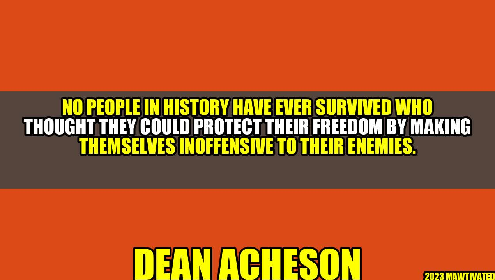

Protecting Freedom: A Lesson from History

Once upon a time, there was a small village that was constantly harassed by a group of bandits who would steal their food and harm their people. The village leaders were afraid and tried to make peace with their enemies by offering them a portion of their harvest every year. However, the bandits kept coming back for more, and the village people suffered in silence.
One day, a young man from the village named Jack decided he had enough. He gathered a small group of villagers and trained them to defend themselves. He taught them how to use weapons, how to build barricades, and how to cooperate as a team. When the bandits came to collect their tribute, Jack and his team were ready. They fought fiercely and drove the bandits away. The village people were amazed and grateful for their bravery.
This story illustrates a simple truth that has been proven countless times throughout history. No people have ever survived by making themselves inoffensive to their enemies. If you want to protect your freedom, you have to be willing to fight for it.
The Lesson of Dean Acheson
In the early 1950s, Dean Acheson was the Secretary of State under President Harry Truman. He was a brilliant diplomat who played a key role in shaping American foreign policy during the Cold War. However, he was also known for his blunt and assertive style, which sometimes clashed with his peers and allies.
One day, Acheson was asked to give a speech at the West Point Military Academy, where he was to receive an honorary degree. He chose to speak about the concept of "liberty under law," which he believed was the foundation of American democracy. In his speech, Acheson said:
"No people in history have ever survived who thought they could protect their freedom by making themselves inoffensive to their enemies. We are all inclined to judge ourselves by our ideals; others, by their acts."
This quote became famous and has since been used by many politicians and scholars to emphasize the importance of defense and deterrence in international relations. What Acheson meant was that if a country wants to be respected and secure, it cannot afford to be weak or appeasing. It has to be strong and assertive.
Examples from History
The history of humankind is full of examples that prove this point. Here are just a few:
- The Battle of Thermopylae: In 480 BC, a small force of Greeks led by King Leonidas of Sparta held off the Persian army of hundreds of thousands for three days at the narrow pass of Thermopylae. Although the Greeks were eventually defeated, their heroic stand inspired other Greeks to unite and defeat the Persians later.
- The Siege of Malta: In 1565, a small force of Knights Hospitaller and Maltese militia held off a powerful Ottoman fleet of over 200 ships and 40,000 men for four months. The defenders suffered heavy casualties but ultimately won the battle and saved Europe from Ottoman domination.
- The Battle of Stalingrad: In 1942-43, the Soviet Union's city of Stalingrad was surrounded and attacked by the German army. The Soviets defended the city with great sacrifice and determination, eventually encircling and defeating the Germans. This battle is considered one of the turning points of World War II.
The Three Points of Conclusion
So, what can we learn from these examples and from the story of Jack and the bandits?
- Defense is essential: If you don't defend yourself, you will be attacked and conquered. This applies to individuals, communities, and countries.
- Strength is respected: If you are strong and assertive, you will earn the respect of your adversaries and allies. This applies to leaders, organizations, and nations.
- Freedom is worth fighting for: If you value your liberty and independence, you have to be willing to sacrifice for it. This applies to everyone who cherishes their rights and dignity.
Practical Tips
If you want to protect your freedom, here are some practical tips:
- Learn self-defense: You don't have to become a martial arts expert, but at least know how to protect yourself if you're attacked. Take a course, practice at home, and carry pepper spray or a whistle.
- Be aware of threats: Don't ignore the signs of danger, whether it's a suspicious person, a hidden obstacle, or a cybersecurity breach. Stay alert and informed, and report any unusual activity to the authorities.
- Stand up for your rights: Don't let anyone intimidate or bully you into submission. Know your rights and use them responsibly. Speak out against injustice and discrimination, and support those who fight for freedom and equality.
Hashtags and SEO
- Hashtags: #freedom #defense #strength #history #liberty #practicaltips
- SEO keywords: protect freedom, self-defense, strength, liberty under law, examples from history, practical tips
- Category: History, Politics, Self-Improvement
Curated by Team Akash.Mittal.Blog
Curated by Team Akash.Mittal.Blog
Share on Twitter Share on LinkedIn